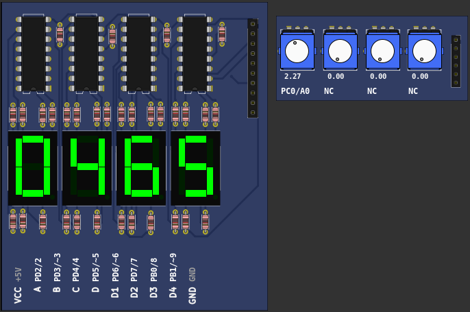

<!DOCTYPE html>
<html><head>
<title>PICSimLab Examples Part Potentiometers</title>
<meta charset='utf-8' />
<meta content='width=device-width,initial-scale=1' name='viewport' />
<link href='picsimlab.css' rel='stylesheet' type='text/css' />
<link href='style.css' rel='stylesheet' type='text/css' />
</head>
<body>
<nav class='TOC'>
<span class='chapterToc'><a href="examples_index.html">Examples Index</a></span>
<span class='chapterToc'><a href="parts_7_Segments_Display.html">7 Segments Display</a></span>
<span class='chapterToc'><a href="parts_7_Segments_Display_(Decoder).html">7 Segments Display (Decoder)</a></span>
<span class='chapterToc'><a href="parts_Buzzer.html">Buzzer</a></span>
<span class='chapterToc'><a href="parts_D._Transfer_Function.html">D. Transfer Function</a></span>
<span class='chapterToc'><a href="parts_DC_Motor.html">DC Motor</a></span>
<span class='chapterToc'><a href="parts_DS1621_(Temperature_I2C).html">DS1621 (Temperature I2C)</a></span>
<span class='chapterToc'><a href="parts_ETH_w5500.html">ETH w5500</a></span>
<span class='chapterToc'><a href="parts_Encoder.html">Encoder</a></span>
<span class='chapterToc'><a href="parts_FM50_(Temperature).html">FM50 (Temperature)</a></span>
<span class='chapterToc'><a href="parts_Fixed_Voltage.html">Fixed Voltage</a></span>
<span class='chapterToc'><a href="parts_Gamepad.html">Gamepad</a></span>
<span class='chapterToc'><a href="parts_Gamepad_(Analogic).html">Gamepad (Analogic)</a></span>
<span class='chapterToc'><a href="parts_IO_74xx595.html">IO 74xx595</a></span>
<span class='chapterToc'><a href="parts_IO_MCP23S17.html">IO MCP23S17</a></span>
<span class='chapterToc'><a href="parts_IO_PCF8574.html">IO PCF8574</a></span>
<span class='chapterToc'><a href="parts_IO_UART.html">IO UART</a></span>
<span class='chapterToc'><a href="parts_IO_Virtual_Term.html">IO Virtual Term</a></span>
<span class='chapterToc'><a href="parts_Jumper_Wires.html">Jumper Wires</a></span>
<span class='chapterToc'><a href="parts_Keypad.html">Keypad</a></span>
<span class='chapterToc'><a href="parts_LDR.html">LDR</a></span>
<span class='chapterToc'><a href="parts_LM35_(Temperature).html">LM35 (Temperature)</a></span>
<span class='chapterToc'><a href="parts_LCD_hd44780.html">LCD hd44780</a></span>
<span class='chapterToc'><a href="parts_LCD_ili9341.html">LCD ili9341</a></span>
<span class='chapterToc'><a href="parts_LCD_pcf8833.html">LCD pcf8833</a></span>
<span class='chapterToc'><a href="parts_LCD_pcd8544.html">LCD pcd8544</a></span>
<span class='chapterToc'><a href="parts_LCD_ssd1306.html">LCD ssd1306</a></span>
<span class='chapterToc'><a href="parts_LED_Matrix.html">LED Matrix</a></span>
<span class='chapterToc'><a href="parts_LEDs.html">LEDs</a></span>
<span class='chapterToc'><a href="parts_MEM_24CXXX.html">MEM 24CXXX</a></span>
<span class='chapterToc'><a href="parts_MPU6050.html">MPU6050</a></span>
<span class='chapterToc'><a href="parts_Potentiometers.html">Potentiometers</a></span>
<span class='sectionToc'><a href="#Arduino_Uno_atmega328p">Arduino_Uno</a></span>
<span class='subsectionToc'><a href="#Arduino_Uno_atmega328p_AnalogInOutSerial">AnalogInOutSerial</a></span>
<span class='subsectionToc'><a href="#Arduino_Uno_atmega328p_counter_dec">counter_dec</a></span>
<span class='subsectionToc'><a href="#Arduino_Uno_atmega328p_counter_latch">counter_latch</a></span>
<span class='subsectionToc'><a href="#Arduino_Uno_atmega328p_display_bargraph">display_bargraph</a></span>
<span class='subsectionToc'><a href="#Arduino_Uno_atmega328p_espmsim_server">espmsim_server</a></span>
<span class='subsectionToc'><a href="#Arduino_Uno_atmega328p_firmata_ethernet">firmata_ethernet</a></span>
<span class='subsectionToc'><a href="#Arduino_Uno_atmega328p_firmata">firmata</a></span>
<span class='subsectionToc'><a href="#Arduino_Uno_atmega328p_LED_matrix_MAX72xx">LED_matrix_MAX72xx</a></span>
<span class='subsectionToc'><a href="#Arduino_Uno_atmega328p_Oscilloscope">Oscilloscope</a></span>
<span class='subsectionToc'><a href="#Arduino_Uno_atmega328p_servo_Knob">servo_Knob</a></span>
<span class='subsectionToc'><a href="#Arduino_Uno_atmega328p_webserver">webserver</a></span>
<span class='sectionToc'><a href="#Breadboard_PIC16F777">Breadboard</a></span>
<span class='subsectionToc'><a href="#Breadboard_PIC16F777_test_b0">test_b0</a></span>
<span class='subsectionToc'><a href="#Breadboard_PIC16F877A_test_b0">test_b0</a></span>
<span class='subsectionToc'><a href="#Breadboard_PIC18F4520_ADC_7segLatch">ADC_7segLatch</a></span>
<span class='subsectionToc'><a href="#Breadboard_PIC18F452_test_b0">test_b0</a></span>
<span class='subsectionToc'><a href="#Breadboard_PIC18F4550_PID">PID</a></span>
<span class='subsectionToc'><a href="#Breadboard_PIC18F4550_test_b0">test_b0</a></span>
<span class='subsectionToc'><a href="#Breadboard_PIC18F4620_test_b0">test_b0</a></span>
<span class='sectionToc'><a href="#PICGenios_PIC18F4550">PICGenios</a></span>
<span class='subsectionToc'><a href="#PICGenios_PIC18F4550_Parts_Demo">Parts_Demo</a></span>
<span class='chapterToc'><a href="parts_Potentiometers_(Rotary).html">Potentiometers (Rotary)</a></span>
<span class='chapterToc'><a href="parts_Push_Buttons.html">Push Buttons</a></span>
<span class='chapterToc'><a href="parts_Push_Buttons_(Analogic).html">Push Buttons (Analogic)</a></span>
<span class='chapterToc'><a href="parts_RGB_LED.html">RGB LED</a></span>
<span class='chapterToc'><a href="parts_RTC_ds1307.html">RTC ds1307</a></span>
<span class='chapterToc'><a href="parts_RTC_pfc8563.html">RTC pfc8563</a></span>
<span class='chapterToc'><a href="parts_SD_Card.html">SD Card</a></span>
<span class='chapterToc'><a href="parts_Servo_Motor.html">Servo Motor</a></span>
<span class='chapterToc'><a href="parts_Signal_Generator.html">Signal Generator</a></span>
<span class='chapterToc'><a href="parts_Step_Motor.html">Step Motor</a></span>
<span class='chapterToc'><a href="parts_SHT3X_(Temp._Hum.).html">SHT3X (Temp. Hum.)</a></span>
<span class='chapterToc'><a href="parts_Switches.html">Switches</a></span>
<span class='chapterToc'><a href="parts_Temperature_System.html">Temperature System</a></span>
<span class='chapterToc'><a href="parts_Ultrasonic_HC-SR04.html">Ultrasonic HC-SR04</a></span>
<span class='chapterToc'><a href="parts_VCD_Dump.html">VCD Dump</a></span>
<span class='chapterToc'><a href="parts_VCD_Dump_(Analogic).html">VCD Dump (Analogic)</a></span>
<span class='chapterToc'><a href="parts_VCD_Play.html">VCD Play</a></span>
</nav><main class='main-content'>
<a name="Arduino_Uno_atmega328p"></a>
<hr><table style="width:100%" border="0" bgcolor='#efefef'>
<tr><td colspan=2 width="100%"><a name="Arduino_Uno_atmega328p_AnalogInOutSerial"></a><small>[Arduino_Uno/<a href='#Arduino_Uno_atmega328p'>atmega328p</a>/AnalogInOutSerial]</small>  <h1>Analog input, analog output, serial output</h1>
<pre>
  Reads an analog input pin, maps the result to a range from 0 to 255 and uses
  the result to set the pulse width modulation (PWM) of an output pin.
  Also prints the results to the Serial Monitor.

  The circuit:
  - potentiometer connected to analog pin 0.
    Center pin of the potentiometer goes to the analog pin.
    side pins of the potentiometer go to +5V and ground
  - LED connected from digital pin 9 to ground

  created 29 Dec. 2008
  modified 9 Apr 2012
  by Tom Igoe

  This example code is in the public domain.

  http://www.arduino.cc/en/Tutorial/AnalogInOutSerial
</pre>


<a href="https://github.com/lcgamboa/picsimlab_examples/blob/master/docs/board_Arduino_Uno/atmega328p/AnalogInOutSerial/src/AnalogInOutSerial.ino" target="_blank">AnalogInOutSerial.ino</a><br><br></td></tr><tr><td width="80%" align=center><a target="blank_" href="board_Arduino_Uno/atmega328p/AnalogInOutSerial/AnalogInOutSerial.png"></a></td>
<td width="20%" align=left ><a href="pzw/board_Arduino_Uno/atmega328p/AnalogInOutSerial.pzw" target="_blank" >Download (pzw)</a>
<br><br><a href="../js/picsimlab.html?../picsimlab_examples/pzw/board_Arduino_Uno/atmega328p/AnalogInOutSerial.pzw" target="_blank" >View Online</a><br><br>
</td></tr></table>
<a name="Arduino_Uno_atmega328p"></a>
<hr><table style="width:100%" border="0" bgcolor='#efefef'>
<tr><td colspan=2 width="100%"><a name="Arduino_Uno_atmega328p_counter_dec"></a><small>[Arduino_Uno/<a href='#Arduino_Uno_atmega328p'>atmega328p</a>/counter_dec]</small>  <h1>Counter with decoder</h1>
<pre>
Simple example of how to use the multiplexed 7-segment display with decoder 
</pre>


<a href="https://github.com/lcgamboa/picsimlab_examples/blob/master/docs/board_Arduino_Uno/atmega328p/counter_dec/src/counter_dec.ino" target="_blank">counter_dec.ino</a><br><br></td></tr><tr><td width="80%" align=center><a target="blank_" href="board_Arduino_Uno/atmega328p/counter_dec/counter_dec.png"></a></td>
<td width="20%" align=left ><a href="pzw/board_Arduino_Uno/atmega328p/counter_dec.pzw" target="_blank" >Download (pzw)</a>
<br><br><a href="../js/picsimlab.html?../picsimlab_examples/pzw/board_Arduino_Uno/atmega328p/counter_dec.pzw" target="_blank" >View Online</a><br><br>
</td></tr></table>
<a name="Arduino_Uno_atmega328p"></a>
<hr><table style="width:100%" border="0" bgcolor='#efefef'>
<tr><td colspan=2 width="100%"><a name="Arduino_Uno_atmega328p_counter_latch"></a><small>[Arduino_Uno/<a href='#Arduino_Uno_atmega328p'>atmega328p</a>/counter_latch]</small>  <h1>Counter with decoder and latch</h1>
<pre>
Simple example of how to use the latched 7-segment display with decoder 
</pre>


<a href="https://github.com/lcgamboa/picsimlab_examples/blob/master/docs/board_Arduino_Uno/atmega328p/counter_latch/src/counter_latch.ino" target="_blank">counter_latch.ino</a><br><br></td></tr><tr><td width="80%" align=center><a target="blank_" href="board_Arduino_Uno/atmega328p/counter_latch/counter_latch.png"></a></td>
<td width="20%" align=left ><a href="pzw/board_Arduino_Uno/atmega328p/counter_latch.pzw" target="_blank" >Download (pzw)</a>
<br><br><a href="../js/picsimlab.html?../picsimlab_examples/pzw/board_Arduino_Uno/atmega328p/counter_latch.pzw" target="_blank" >View Online</a><br><br>
</td></tr></table>
<a name="Arduino_Uno_atmega328p"></a>
<hr><table style="width:100%" border="0" bgcolor='#efefef'>
<tr><td colspan=2 width="100%"><a name="Arduino_Uno_atmega328p_display_bargraph"></a><small>[Arduino_Uno/<a href='#Arduino_Uno_atmega328p'>atmega328p</a>/display_bargraph]</small>  <h1>  LED bar graph</h1>
<pre>

  Turns on a series of LEDs based on the value of an analog sensor.
  This is a simple way to make a bar graph display. Though this graph uses 10
  LEDs, you can use any number by changing the LED count and the pins in the
  array.

  This method can be used to control any series of digital outputs that depends
  on an analog input.

  The circuit:
  - LEDs from pins 2 through 9 to ground

  created 4 Sep 2010
  by Tom Igoe

  This example code is in the public domain.

  http://www.arduino.cc/en/Tutorial/BarGraph
</pre>


<a href="https://github.com/lcgamboa/picsimlab_examples/blob/master/docs/board_Arduino_Uno/atmega328p/display_bargraph/src/barGraph.ino" target="_blank">barGraph.ino</a><br><br></td></tr><tr><td width="80%" align=center><a target="blank_" href="board_Arduino_Uno/atmega328p/display_bargraph/display_bargraph.png"></a></td>
<td width="20%" align=left ><a href="pzw/board_Arduino_Uno/atmega328p/display_bargraph.pzw" target="_blank" >Download (pzw)</a>
<br><br><a href="../js/picsimlab.html?../picsimlab_examples/pzw/board_Arduino_Uno/atmega328p/display_bargraph.pzw" target="_blank" >View Online</a><br><br>
</td></tr></table>
<a name="Arduino_Uno_atmega328p"></a>
<hr><table style="width:100%" border="0" bgcolor='#efefef'>
<tr><td colspan=2 width="100%"><a name="Arduino_Uno_atmega328p_espmsim_server"></a><small>[Arduino_Uno/<a href='#Arduino_Uno_atmega328p'>atmega328p</a>/espmsim_server]</small>  <h1> Serial esp8266/espmsim TCP server</h1>
<pre>
Open the esp8266 modem simulator in tools menu and connect the serial 
(or a real esp8266 connected in a real serial port).

To use the serial port, first configure the com0com or tty0tty as 
described in the help and open the serial terminal (cutecom).

When the server is loaded, open a browser in the address http://127.0.0.1:2000 

</pre>


<a href="https://github.com/lcgamboa/picsimlab_examples/blob/master/docs/board_Arduino_Uno/atmega328p/espmsim_server/src/espmsim_server.ino" target="_blank">espmsim_server.ino</a><br><br></td></tr><tr><td width="80%" align=center><a target="blank_" href="board_Arduino_Uno/atmega328p/espmsim_server/espmsim_server.png"></a></td>
<td width="20%" align=left ><a href="pzw/board_Arduino_Uno/atmega328p/espmsim_server.pzw" target="_blank" >Download (pzw)</a>
</td></tr></table>
<a name="Arduino_Uno_atmega328p"></a>
<hr><table style="width:100%" border="0" bgcolor='#efefef'>
<tr><td colspan=2 width="100%"><a name="Arduino_Uno_atmega328p_firmata_ethernet"></a><small>[Arduino_Uno/<a href='#Arduino_Uno_atmega328p'>atmega328p</a>/firmata_ethernet]</small>  <h1> Firmata Library - Standard Firmata Ethernet </h1>
<pre>
  StandardFirmataEthernet is a TCP client/server implementation. You will need a Firmata client library
  with a network transport that can act as a TCP server or client in order to establish a connection between
  StandardFirmataEthernet and the Firmata client application.
  To use StandardFirmataEthernet you will need to have one of the following
  boards or shields:
  - Arduino Ethernet shield (or clone)
  - Arduino Ethernet board (or clone)
  - Arduino Yun
  Follow the instructions in the ethernetConfig.h file (ethernetConfig.h tab in Arduino IDE) to
  configure your particular hardware.
  NOTE: If you are using an Arduino Ethernet shield you cannot use the following pins on
  the following boards. Firmata will ignore any requests to use these pins:
  - Arduino Uno or other ATMega328 boards: (D4, D10, D11, D12, D13)
  - Arduino Mega: (D4, D10, D50, D51, D52, D53)
  - Arduino Leonardo: (D4, D10)
  - Arduino Due: (D4, D10)
  - Arduino Zero: (D4, D10)
  If you are using an ArduinoEthernet board, the following pins cannot be used (same as Uno):
  - D4, D10, D11, D12, D13
</pre>
<br>
<br>
<a href="https://github.com/firmata/arduino/blob/master/examples/StandardFirmataEthernet/StandardFirmataEthernet.ino" target="_blank">StandardFirmataEthernet.ino</a><br><br></td></tr><tr><td width="80%" align=center><a target="blank_" href="board_Arduino_Uno/atmega328p/firmata_ethernet/firmata_ethernet.png"></a></td>
<td width="20%" align=left ><a href="pzw/board_Arduino_Uno/atmega328p/firmata_ethernet.pzw" target="_blank" >Download (pzw)</a>
</td></tr></table>
<a name="Arduino_Uno_atmega328p"></a>
<hr><table style="width:100%" border="0" bgcolor='#efefef'>
<tr><td colspan=2 width="100%"><a name="Arduino_Uno_atmega328p_firmata"></a><small>[Arduino_Uno/<a href='#Arduino_Uno_atmega328p'>atmega328p</a>/firmata]</small>  <h1> Firmata Library - Standard Firmata  </h1>
<pre>
  Firmata is a generic protocol for communicating with microcontrollers
  from software on a host computer. It is intended to work with
  any host computer software package.
  To download a host software package, please click on the following link
  to open the list of Firmata client libraries in your default browser.
  https://github.com/firmata/arduino#firmata-client-libraries
  Copyright (C) 2006-2008 Hans-Christoph Steiner.  All rights reserved.
  Copyright (C) 2010-2011 Paul Stoffregen.  All rights reserved.
  Copyright (C) 2009 Shigeru Kobayashi.  All rights reserved.
  Copyright (C) 2009-2016 Jeff Hoefs.  All rights reserved.
  This library is free software; you can redistribute it and/or
  modify it under the terms of the GNU Lesser General Public
  License as published by the Free Software Foundation; either
  version 2.1 of the License, or (at your option) any later version.
  See file LICENSE.txt for further informations on licensing terms.
  Last updated August 17th, 2017
</pre>
<br>
<br>
<a href="https://github.com/firmata/arduino/blob/master/examples/StandardFirmata/StandardFirmata.ino" target="_blank">StandardFirmata.ino</a><br><br></td></tr><tr><td width="80%" align=center><a target="blank_" href="board_Arduino_Uno/atmega328p/firmata/firmata.png"></a></td>
<td width="20%" align=left ><a href="pzw/board_Arduino_Uno/atmega328p/firmata.pzw" target="_blank" >Download (pzw)</a>
</td></tr></table>
<a name="Arduino_Uno_atmega328p"></a>
<hr><table style="width:100%" border="0" bgcolor='#efefef'>
<tr><td colspan=2 width="100%"><a name="Arduino_Uno_atmega328p_LED_matrix_MAX72xx"></a><small>[Arduino_Uno/<a href='#Arduino_Uno_atmega328p'>atmega328p</a>/LED_matrix_MAX72xx]</small>  <h1> LED matrix MAX7211 </h1>
<pre>
   matriz_led.ino
  
   Exemplo PONG
   Livro Arduino Básico de Michael McRoberts

</pre>


<a href="https://github.com/lcgamboa/picsimlab_examples/blob/master/docs/board_Arduino_Uno/atmega328p/LED_matrix_MAX72xx/src/matriz_led.ino" target="_blank">matriz_led.ino</a><br><br></td></tr><tr><td width="80%" align=center><a target="blank_" href="board_Arduino_Uno/atmega328p/LED_matrix_MAX72xx/LED_matrix_MAX72xx.png"></a></td>
<td width="20%" align=left ><a href="pzw/board_Arduino_Uno/atmega328p/LED_matrix_MAX72xx.pzw" target="_blank" >Download (pzw)</a>
<br><br><a href="../js/picsimlab.html?../picsimlab_examples/pzw/board_Arduino_Uno/atmega328p/LED_matrix_MAX72xx.pzw" target="_blank" >View Online</a><br><br>
</td></tr></table>
<a name="Arduino_Uno_atmega328p"></a>
<hr><table style="width:100%" border="0" bgcolor='#efefef'>
<tr><td colspan=2 width="100%"><a name="Arduino_Uno_atmega328p_Oscilloscope"></a><small>[Arduino_Uno/<a href='#Arduino_Uno_atmega328p'>atmega328p</a>/Oscilloscope]</small>  <h1>  Arduino Uno 3V Oscilloscope </h1>
<pre>
This is my version of the Arduino oscilloscope code.  This file is strictly the display code for 
one analog channel.  It will soon be merged into my data logger project.

This is shared so others may incorporate the display code into their projects.  It has been modified to 
play nice with the Adafruit 5110 LCD library.

This is a work in progress but hopefully it will help someone else by providing
a base to start and work from.

Please check out my Youtube videos here and consider a thumbs up if this helped you!
Youtube : <a href="http://www.youtube.com/mkmeorg">http://www.youtube.com/mkmeorg</a>

Full Arduino Tutorial Playlist here: <a href="https://www.youtube.com/playlist?list=PLxyM2a_cfnzjXms2WRO9OdAr-_7K-Ve2Z">https://www.youtube.com/playlist?list=PLxyM2a_cfnzjXms2WRO9OdAr-_7K-Ve2Z</a>

Original code comment text:
###########################################################
  Title:       Arduino Uno 3V Oscilloscope
  Purpose:     Use a Nokia 5110 LCD screen with the arduino
  Created by:  Brian O'Dell from the Fileark Arduino Oscilloscope.
  Note:        Please reuse, repurpose, and redistribute this code.
  Note:        This code uses the Adafruit PDC8544 LCD library  
###########################################################
<a href="https://github.com/Megamemnon/Arduino-Oscilloscope/blob/master/Uno3VOScope.ino">https://github.com/Megamemnon/Arduino-Oscilloscope/blob/master/Uno3VOScope.ino</a>
</pre>


<a href="https://github.com/lcgamboa/picsimlab_examples/blob/master/docs/board_Arduino_Uno/atmega328p/Oscilloscope/src/oscilloscope.ino" target="_blank">oscilloscope.ino</a><br><br></td></tr><tr><td width="80%" align=center><a target="blank_" href="board_Arduino_Uno/atmega328p/Oscilloscope/Oscilloscope.png"></a></td>
<td width="20%" align=left ><a href="pzw/board_Arduino_Uno/atmega328p/Oscilloscope.pzw" target="_blank" >Download (pzw)</a>
<br><br><a href="../js/picsimlab.html?../picsimlab_examples/pzw/board_Arduino_Uno/atmega328p/Oscilloscope.pzw" target="_blank" >View Online</a><br><br>
</td></tr></table>
<a name="Arduino_Uno_atmega328p"></a>
<hr><table style="width:100%" border="0" bgcolor='#efefef'>
<tr><td colspan=2 width="100%"><a name="Arduino_Uno_atmega328p_servo_Knob"></a><small>[Arduino_Uno/<a href='#Arduino_Uno_atmega328p'>atmega328p</a>/servo_Knob]</small>  <h1> Controlling a servo position using a potentiometer (variable resistor) </h1>
<pre>
 Controlling a servo position using a potentiometer (variable resistor)
 by Michal Rinott <http://people.interaction-ivrea.it/m.rinott>

 modified on 8 Nov 2013
 by Scott Fitzgerald
 http://www.arduino.cc/en/Tutorial/Knob
</pre>


<a href="https://github.com/lcgamboa/picsimlab_examples/blob/master/docs/board_Arduino_Uno/atmega328p/servo_Knob/src/Knob.ino" target="_blank">Knob.ino</a><br><br></td></tr><tr><td width="80%" align=center><a target="blank_" href="board_Arduino_Uno/atmega328p/servo_Knob/servo_Knob.png"></a></td>
<td width="20%" align=left ><a href="pzw/board_Arduino_Uno/atmega328p/servo_Knob.pzw" target="_blank" >Download (pzw)</a>
<br><br><a href="../js/picsimlab.html?../picsimlab_examples/pzw/board_Arduino_Uno/atmega328p/servo_Knob.pzw" target="_blank" >View Online</a><br><br>
</td></tr></table>
<a name="Arduino_Uno_atmega328p"></a>
<hr><table style="width:100%" border="0" bgcolor='#efefef'>
<tr><td colspan=2 width="100%"><a name="Arduino_Uno_atmega328p_webserver"></a><small>[Arduino_Uno/<a href='#Arduino_Uno_atmega328p'>atmega328p</a>/webserver]</small>  <h1> library Ethernet example: WebServer </h1>
<pre>
  Web Server
 A simple web server that shows the value of the analog input pins.
 using an Arduino Wiznet Ethernet shield.
 Circuit:
 * Ethernet shield attached to pins 10, 11, 12, 13
 * Analog inputs attached to pins A0 through A5 (optional)
 created 18 Dec 2009
 by David A. Mellis
 modified 9 Apr 2012
 by Tom Igoe
 modified 02 Sept 2015
 by Arturo Guadalupi
</pre>
<br>
<br>Open a browser on address http://127.0.0.1:2080 
<br>
<a href="https://github.com/arduino-libraries/Ethernet/blob/master/examples/WebServer/WebServer.ino" target="_blank">WebServer.ino</a><br><br></td></tr><tr><td width="80%" align=center><a target="blank_" href="board_Arduino_Uno/atmega328p/webserver/webserver.png"></a></td>
<td width="20%" align=left ><a href="pzw/board_Arduino_Uno/atmega328p/webserver.pzw" target="_blank" >Download (pzw)</a>
</td></tr></table>
<a name="Breadboard_PIC16F777"></a>
<hr><table style="width:100%" border="0" bgcolor='#efefef'>
<tr><td colspan=2 width="100%"><a name="Breadboard_PIC16F777_test_b0"></a><small>[Breadboard/<a href='#Breadboard_PIC16F777'>PIC16F777</a>/test_b0]</small><h1> Simple example for testing board features. </h1>

<pre>
1- Ask to turn on all dip switches;
2- Tests LCD display;
3- Tests 7-segment displays;
4- Test the red LEDs connected to the PORTB and PORTD;
5- Tests push buttons;
6- Test the serial port transmitting;
7- Test the serial port receiving;
8- Tests AD converters connected to potentiometers;
9- Test Relays
10- Tests temperature measurement;
11- Turn on the Heater;
12- Turn on the fan and measure the speed.
13- Tests the matrix keyboard
14- Tests internal eeprom

To use the serial port, previously configure com0com or tty0tty as described in the PICSimLab help and open the serial terminal (cutecom).
</pre>
<a href="https://github.com/lcgamboa/picsimlab_examples/tree/master/docs/board_Breadboard/PIC18F4550/test_b0/src/teste_b0.X" target="_blank">MPLABX test_b0 project</a>
<br><br><br></td></tr><tr><td width="80%" align=center><a target="blank_" href="board_Breadboard/PIC16F777/test_b0/test_b0.png"></a></td>
<td width="20%" align=left ><a href="pzw/board_Breadboard/PIC16F777/test_b0.pzw" target="_blank" >Download (pzw)</a>
<br><br><a href="../js/picsimlab.html?../picsimlab_examples/pzw/board_Breadboard/PIC16F777/test_b0.pzw" target="_blank" >View Online</a><br><br>
</td></tr></table>
<a name="Breadboard_PIC16F877A"></a>
<hr><table style="width:100%" border="0" bgcolor='#efefef'>
<tr><td colspan=2 width="100%"><a name="Breadboard_PIC16F877A_test_b0"></a><small>[Breadboard/<a href='#Breadboard_PIC16F877A'>PIC16F877A</a>/test_b0]</small><h1> Simple example for testing board features. </h1>

<pre>
1- Ask to turn on all dip switches;
2- Tests LCD display;
3- Tests 7-segment displays;
4- Test the red LEDs connected to the PORTB and PORTD;
5- Tests push buttons;
6- Test the serial port transmitting;
7- Test the serial port receiving;
8- Tests AD converters connected to potentiometers;
9- Test Relays
10- Tests temperature measurement;
11- Turn on the Heater;
12- Turn on the fan and measure the speed.
13- Tests the matrix keyboard
14- Tests internal eeprom

To use the serial port, previously configure com0com or tty0tty as described in the PICSimLab help and open the serial terminal (cutecom).
</pre>
<a href="https://github.com/lcgamboa/picsimlab_examples/tree/master/docs/board_Breadboard/PIC18F4550/test_b0/src/teste_b0.X" target="_blank">MPLABX test_b0 project</a>
<br><br><br></td></tr><tr><td width="80%" align=center><a target="blank_" href="board_Breadboard/PIC16F877A/test_b0/test_b0.png"></a></td>
<td width="20%" align=left ><a href="pzw/board_Breadboard/PIC16F877A/test_b0.pzw" target="_blank" >Download (pzw)</a>
<br><br><a href="../js/picsimlab.html?../picsimlab_examples/pzw/board_Breadboard/PIC16F877A/test_b0.pzw" target="_blank" >View Online</a><br><br>
</td></tr></table>
<a name="Breadboard_PIC18F4520"></a>
<hr><table style="width:100%" border="0" bgcolor='#efefef'>
<tr><td colspan=2 width="100%"><a name="Breadboard_PIC18F4520_ADC_7segLatch"></a><small>[Breadboard/<a href='#Breadboard_PIC18F4520'>PIC18F4520</a>/ADC_7segLatch]</small>  <h1>Counter with decoder and latch</h1>
<pre>
Simple example of how to use the latched 7-segment display with decoder and ADC
</pre>


<a href="https://github.com/lcgamboa/picsimlab_examples/blob/master/docs/board_Breadboard/PIC18F4520/ADC_7segLatch/src/main.c" target="_blank">main.c</a><br><br></td></tr><tr><td width="80%" align=center><a target="blank_" href="board_Breadboard/PIC18F4520/ADC_7segLatch/ADC_7segLatch.gif"></a></td>
<td width="20%" align=left ><a href="pzw/board_Breadboard/PIC18F4520/ADC_7segLatch.pzw" target="_blank" >Download (pzw)</a>
<br><br><a href="../js/picsimlab.html?../picsimlab_examples/pzw/board_Breadboard/PIC18F4520/ADC_7segLatch.pzw" target="_blank" >View Online</a><br><br>
</td></tr></table>
<a name="Breadboard_PIC18F452"></a>
<hr><table style="width:100%" border="0" bgcolor='#efefef'>
<tr><td colspan=2 width="100%"><a name="Breadboard_PIC18F452_test_b0"></a><small>[Breadboard/<a href='#Breadboard_PIC18F452'>PIC18F452</a>/test_b0]</small><h1> Simple example for testing board features. </h1>

<pre>
1- Ask to turn on all dip switches;
2- Tests LCD display;
3- Tests 7-segment displays;
4- Test the red LEDs connected to the PORTB and PORTD;
5- Tests push buttons;
6- Test the serial port transmitting;
7- Test the serial port receiving;
8- Tests AD converters connected to potentiometers;
9- Test Relays
10- Tests temperature measurement;
11- Turn on the Heater;
12- Turn on the fan and measure the speed.
13- Tests the matrix keyboard
14- Tests internal eeprom

To use the serial port, previously configure com0com or tty0tty as described in the PICSimLab help and open the serial terminal (cutecom).
</pre>
<a href="https://github.com/lcgamboa/picsimlab_examples/tree/master/docs/board_Breadboard/PIC18F4550/test_b0/src/teste_b0.X" target="_blank">MPLABX test_b0 project</a>
<br><br><br></td></tr><tr><td width="80%" align=center><a target="blank_" href="board_Breadboard/PIC18F452/test_b0/test_b0.png"></a></td>
<td width="20%" align=left ><a href="pzw/board_Breadboard/PIC18F452/test_b0.pzw" target="_blank" >Download (pzw)</a>
<br><br><a href="../js/picsimlab.html?../picsimlab_examples/pzw/board_Breadboard/PIC18F452/test_b0.pzw" target="_blank" >View Online</a><br><br>
</td></tr></table>
<a name="Breadboard_PIC18F4550"></a>
<hr><table style="width:100%" border="0" bgcolor='#efefef'>
<tr><td colspan=2 width="100%"><a name="Breadboard_PIC18F4550_PID"></a><small>[Breadboard/<a href='#Breadboard_PIC18F4550'>PIC18F4550</a>/PID]</small><h1>Discrete Transfer Function and PID example.</h1>

<pre>
1- Use potentiometer to define setpoint
2- Use RB0 switch to select open loop or closed loop with PID controller

Use octave or matlab to calculate transfer function coeficients:

>>gs = tf([1],[0.2 0.25 1]);

Transfer function 'gs' from input 'u1' to output ...

               1
 y1:  --------------------
      0.2 s^2 + 0.25 s + 1

Continuous-time model.

>> gd=c2d(gs,0.1)

Transfer function 'gd' from input 'u1' to output ...

       0.02389 z + 0.02291
 y1:  ----------------------
      z^2 - 1.836 z + 0.8825

Discrete-time model Ts=0.1.


</pre>
<a href="https://github.com/lcgamboa/picsimlab_examples/tree/master/docs/board_Breadboard/PIC18F4550/PID/src/PID.X" target="_blank">MPLABX PID project</a>
<br><br><br></td></tr><tr><td width="80%" align=center><a target="blank_" href="board_Breadboard/PIC18F4550/PID/PID.png"></a></td>
<td width="20%" align=left ><a href="pzw/board_Breadboard/PIC18F4550/PID.pzw" target="_blank" >Download (pzw)</a>
<br><br><a href="../js/picsimlab.html?../picsimlab_examples/pzw/board_Breadboard/PIC18F4550/PID.pzw" target="_blank" >View Online</a><br><br>
</td></tr></table>
<a name="Breadboard_PIC18F4550"></a>
<hr><table style="width:100%" border="0" bgcolor='#efefef'>
<tr><td colspan=2 width="100%"><a name="Breadboard_PIC18F4550_test_b0"></a><small>[Breadboard/<a href='#Breadboard_PIC18F4550'>PIC18F4550</a>/test_b0]</small><h1> Simple example for testing board features. </h1>

<pre>
1- Ask to turn on all dip switches;
2- Tests LCD display;
3- Tests 7-segment displays;
4- Test the red LEDs connected to the PORTB and PORTD;
5- Tests push buttons;
6- Test the serial port transmitting;
7- Test the serial port receiving;
8- Tests AD converters connected to potentiometers;
9- Test Relays
10- Tests temperature measurement;
11- Turn on the Heater;
12- Turn on the fan and measure the speed.
13- Tests the matrix keyboard
14- Tests internal eeprom

To use the serial port, previously configure com0com or tty0tty as described in the PICSimLab help and open the serial terminal (cutecom).
</pre>
<a href="https://github.com/lcgamboa/picsimlab_examples/tree/master/docs/board_Breadboard/PIC18F4550/test_b0/src/teste_b0.X" target="_blank">MPLABX test_b0 project</a>
<br><br><br></td></tr><tr><td width="80%" align=center><a target="blank_" href="board_Breadboard/PIC18F4550/test_b0/test_b0.png"></a></td>
<td width="20%" align=left ><a href="pzw/board_Breadboard/PIC18F4550/test_b0.pzw" target="_blank" >Download (pzw)</a>
<br><br><a href="../js/picsimlab.html?../picsimlab_examples/pzw/board_Breadboard/PIC18F4550/test_b0.pzw" target="_blank" >View Online</a><br><br>
</td></tr></table>
<a name="Breadboard_PIC18F4620"></a>
<hr><table style="width:100%" border="0" bgcolor='#efefef'>
<tr><td colspan=2 width="100%"><a name="Breadboard_PIC18F4620_test_b0"></a><small>[Breadboard/<a href='#Breadboard_PIC18F4620'>PIC18F4620</a>/test_b0]</small><h1> Simple example for testing board features. </h1>

<pre>
1- Ask to turn on all dip switches;
2- Tests LCD display;
3- Tests 7-segment displays;
4- Test the red LEDs connected to the PORTB and PORTD;
5- Tests push buttons;
6- Test the serial port transmitting;
7- Test the serial port receiving;
8- Tests AD converters connected to potentiometers;
9- Test Relays
10- Tests temperature measurement;
11- Turn on the Heater;
12- Turn on the fan and measure the speed.
13- Tests the matrix keyboard
14- Tests internal eeprom

To use the serial port, previously configure com0com or tty0tty as described in the PICSimLab help and open the serial terminal (cutecom).
</pre>
<a href="https://github.com/lcgamboa/picsimlab_examples/tree/master/docs/board_Breadboard/PIC18F4550/test_b0/src/teste_b0.X" target="_blank">MPLABX test_b0 project</a>
<br><br><br></td></tr><tr><td width="80%" align=center><a target="blank_" href="board_Breadboard/PIC18F4620/test_b0/test_b0.png"></a></td>
<td width="20%" align=left ><a href="pzw/board_Breadboard/PIC18F4620/test_b0.pzw" target="_blank" >Download (pzw)</a>
<br><br><a href="../js/picsimlab.html?../picsimlab_examples/pzw/board_Breadboard/PIC18F4620/test_b0.pzw" target="_blank" >View Online</a><br><br>
</td></tr></table>
<a name="PICGenios_PIC18F4550"></a>
<hr><table style="width:100%" border="0" bgcolor='#efefef'>
<tr><td colspan=2 width="100%"><a name="PICGenios_PIC18F4550_Parts_Demo"></a><small>[PICGenios/<a href='#PICGenios_PIC18F4550'>PIC18F4550</a>/Parts_Demo]</small><h1> Simple example for servomotor and stepper motor testing. </h1>

<pre>
Servo motor connected in RB0 controlled by AN0 analog channel.
Stepper motor connected to RB7, RB6, RB5 and RB4.
</pre>

<a href="https://github.com/lcgamboa/picsimlab_examples/tree/master/docs/board_PICGenios/PIC18F4550/Parts_Demo/src/parts_test.X" target="_blank">MPLABX Parts_Demo project</a><br><br></td></tr><tr><td width="80%" align=center><a target="blank_" href="board_PICGenios/PIC18F4550/Parts_Demo/Parts_Demo.png"></a></td>
<td width="20%" align=left ><a href="pzw/board_PICGenios/PIC18F4550/Parts_Demo.pzw" target="_blank" >Download (pzw)</a>
<br><br><a href="../js/picsimlab.html?../picsimlab_examples/pzw/board_PICGenios/PIC18F4550/Parts_Demo.pzw" target="_blank" >View Online</a><br><br>
</td></tr></table>
</main>
<script src='picsimlab.js' type='text/javascript'></script>
<script data-goatcounter='https://4017.goatcounter.com/count' src='https://gc.zgo.at/count.js'></script>
<div class='footer'>Copyright © 2021 lcgamboa. Built with make4ht.</div></body></html>
